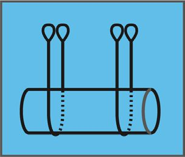

Lastaufnahme- und Anschlagmittel dürfen nicht über die Tragfähigkeit hinaus belastet werden.
Tragfähigkeit (Working Load Limit, abgekürzt WLL) ist die maximale Last, für die das Lastaufnahme- oder Anschlagmittel unter den vom Hersteller angegebenen Bedingungen ausgelegt ist.
Belastung des Lastaufnahme- oder Anschlagmittels ist die durch die Masse der Last aufgebrachte Kraft.
Die Tragfähigkeit von Lastaufnahme- und Anschlagmitteln ist von verschiedenen Einflussfaktoren abhängig. Dazu sind die Angaben des Herstellers zu beachten.
Die Tragfähigkeit von Anschlagmitteln ist unter anderem abhängig von
Die Tragfähigkeit ist der Kennzeichnung des Anschlagmittels zu entnehmen.
Siehe auch DGUV Information 209-021 "Belastungstabellen für Anschlagmittel aus Rundstahlketten, Stahldrahtseilen, Rundschlingen, Chemiefaserhebebändern, Chemiefaserseilen, Naturfaserseile
Bei der Auswahl und dem Einsatz von Anschlagmitteln ist der Einfluss der Temperatur auf die Tragfähigkeit zu berücksichtigen (siehe Anhang C).
Beim Heben von Lasten ist auch das Eigengewicht von Anschlagmitteln zu beachten, siehe Kapitel 3.5 Nr. 2.
Die Hauptanschlagarten sind:
Beim direkten Anschlagen verbindet das Anschlagmittel einen oder mehrere Anschlagpunkte der Last mit dem Hebezeug oder mit dem Lastaufnahmemittel.
Abb. 2 Beispiele für "Anschlagart direkt" nach DGUV Information 209-021 "Belastungstabellen für Anschlagmittel aus Rundstahlketten, Stahldrahtseilen, Rundschlingen, Chemiefaserhebebändern, Chemiefaserseilen, Naturfaserseilen" (Symbolische Darstellung)
Anschlagpunkte müssen einen Betriebskoeffizienten (Verhältnis Mindestbruchkraft zu Tragfähigkeit) von mindestens 4 haben.
Die Anschlagmittel werden um die Last gelegt und die freien Enden durch das jeweilige Gegenende nach oben geführt und in den Lasthaken oder in eine Traverse eingehängt.

Abb. 3 Beispiele für Anschlagart Schnürgang nach DGUV Information 209-021 "Belastungstabellen für Anschlagmittel aus Rundstahlketten, Stahldrahtseilen, Rundschlingen, Chemiefaserhebebändern, Chemiefaserseilen, Naturfaserseilen" (Symbolische Darstellung)
Die Tragfähigkeit der Anschlagmittel beim Anschlagen im Schnürgang beträgt höchstens 80 % der Tragfähigkeit in der Anschlagart direkt.
Beim Hängegang werden die Anschlagmittel U-förmig einmal um die Last gelegt, die freien Enden nach oben geführt und in den Lasthaken oder in eine Traverse eingehängt, das heißt, die Last liegt dabei lediglich in den Anschlagmitteln.

Abb. 4 Beispiele für Anschlagart Schnürgang nach DGUV Information 209-021 "Belastungstabellen für Anschlagmittel aus Rundstahlketten, Stahldrahtseilen, Rundschlingen, Chemiefaserhebebändern, Chemiefaserseilen, Naturfaserseilen" (Symbolische Darstellung)
Beim Anschlagen mit mehreren Strängen dürfen nur zwei Stränge als tragend angenommen werden. Das gilt nicht, wenn sichergestellt ist, dass sich die Last gleichmäßig auch auf weitere Stränge verteilt oder dass bei ungleicher Lastverteilung die zulässige Belastung der einzelnen Stränge nicht überschritten wird.
Mit einer ungleichen Verteilung der Last auf die Stränge des Gehänges ist immer dann zu rechnen, wenn die Last nicht elastisch genug ist und es keine Ausgleichseinrichtung, zum Beispiel eine Ausgleichswippe, gibt.
Eine ungleiche Lastverteilung kann auch von der Last selbst herrühren, zum Beispiel bei asymmetrischen Lasten oder wenn der Lastschwerpunkt nicht mittig liegt. Eine Belastungsabweichung bis 10 % in den Strängen kann unberücksichtigt bleiben. Der Nachweis, dass sich die Last gleichmäßig auf weitere Stränge verteilt oder dass bei ungleicher Lastverteilung die zulässige Belastung der einzelnen Stränge nicht überschritten wird, kann zum Beispiel über einen Versuch mit Messung der Belastung in den Einzelsträngen oder über einen Nachweis durch statische Berechnung erbracht werden.
Der Neigungswinkel ist der Winkel, der aus der Richtung eines Strangs des Anschlagmittels und einer gedachten Lotrechten gebildet wird.
Die Tragfähigkeit des Anschlagmittels beim mehrsträngigen Anschlagen ist abhängig vom Neigungswinkel. Mit größer werdendem Neigungswinkel nimmt die Tragfähigkeit in der Regel ab. Das muss bei der Auswahl des Anschlagmittels berücksichtigt werden.
Zur Auswahl des Anschlagmittels siehe DGUV Informa-tion 209-021 "Belastungstabellen für Anschlagmittel aus Rundstahlketten, Stahldrahtseilen, Rundschlingen, Chemiefaserhebebändern, Chemiefaserseilen, Naturfaserseilen.

Abb. 5 Neigungswinkel
Der Neigungswinkel darf 60° nicht überschreiten!
Das gilt nicht für Seile und Ketten, die in Lastaufnahmemitteln fest eingebaut sind. Bei ihnen ist der Neigungswinkel konstruktionsbedingt unveränderlich und die Seile und Ketten sind vom Hersteller entsprechend ausgelegt.
Die Tragfähigkeit von Lastaufnahmemitteln ist ihrer Kennzeichnung zu entnehmen.
Beim Heben von Lasten ist auch das Eigengewicht von Lastaufnahmemitteln zu beachten, siehe Kapitel 3.5 Nr. 2 (siehe auch DGUV Vorschrift 52 und 53 "Krane").